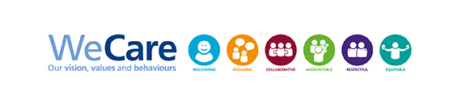

We are part of the Barts Health Education Academy, working across all five trust hospitals to build and run simulation-based training that changes how staff perform under pressure.
We design scenarios, brief and run simulation days, and train the trust's own staff to debrief well. Our work spans postgraduate crisis training, undergraduate teaching, induction for new doctors, and technology-led programmes using VR and part-task trainers.
Everything we run maps to a recognised framework — ANTS, Crisis Resource Management, ASPiH standards, or a royal college curriculum — so learning translates directly to practice on the ward.
Doctors in training seconded to design scenarios, run sessions and lead debriefs alongside consultant faculty.
Senior clinicians across anaesthesia, emergency medicine and critical care who supervise and co-deliver courses.
Run the manikins, part-task trainers and audiovisual systems that make a scenario feel real.
Play patients, relatives and colleagues in communication-focused scenarios, following scripted briefs.
Barts Health's six values — Welcoming, Engaging, Collaborative, Accountable, Respectful, Equitable — shape how we brief candidates, run scenarios and give feedback. A good debrief is honest, but it is also kind.
